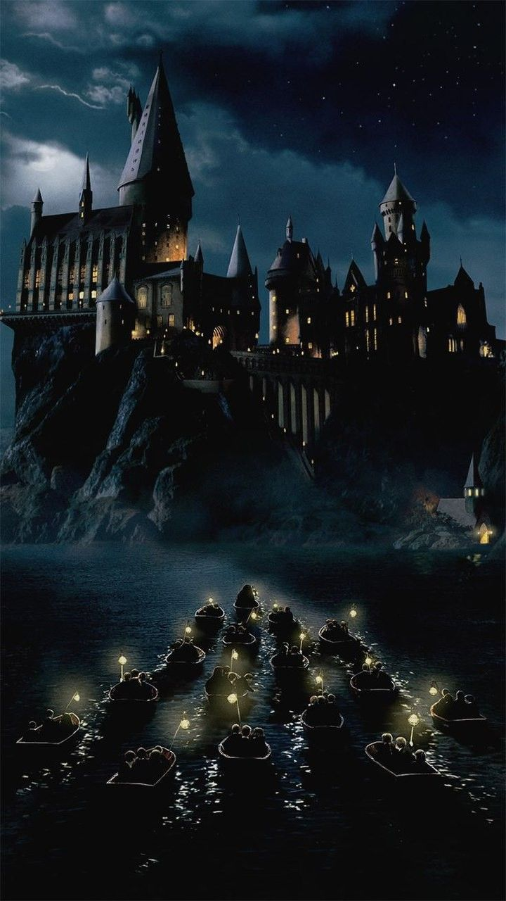

I love magical Worlds and the characters in the movie.
The Plot of the movie is engaging and well-developed.
The Character development is excellent and adds depth to the story.
Harry Potter follows an orphaned boy who discovers he is a wizard at age 11. He attends a magical school, makes loyal friends, and learns that he is famous for surviving an attack by the dark Lord Voldemort, setting up an epic, years-long struggle to defeat the ultimate evil.The Beginning: Orphaned as a baby, Harry lives with his miserable relatives until he is invited to attend Hogwarts School of Witchcraft and Wizardry. The Friends: At school, he befriends Ron Weasley and Hermione Granger, and they are mentored by the wise headmaster Albus Dumbledore.The Conflict: Harry discovers that his parents were murdered by Lord Voldemort, a dark wizard seeking immortality and world domination. Because baby Harry miraculously survived Voldemort's killing curse, he is the only person who can stop him. The Climax: Over seven years, Harry, his friends, and the wizarding community fight to prevent Voldemort's return to full power, culminating in a final, all-out wizarding war.
1. The Sorting Hat Ceremony: The moment when Harry and his friends are sorted into their Hogwarts houses is a magical and memorable scene that sets the tone for the entire series.
2. The Quidditch Matches: The thrilling Quidditch matches, where Harry showcases his flying skills, are some of the most exciting moments in the series.
3. The Battle of Hogwarts: The epic final battle between the forces of good and evil is a climactic and emotional moment that brings the story to a satisfying conclusion.
1. The Chamber of Secrets: The revelation of the Chamber of Secrets and the resulting chaos are some of the more unsettling moments in the series.
2. The Goblet of Fire: The Triwizard Tournament and its dangerous challenges are some of the more intense and frightening moments in the series.
3. The Order of the Phoenix: The dark and oppressive atmosphere of the Ministry of Magic and the loss of Dumbledore are some of the more somber moments in the series.
"Happiness can be found even in the darkest of times, if one only remembers to turn on the light." - Albus Dumbledore
"It does not do to dwell on dreams and forget to live." - Albus Dumbledore
"Even the smallest person can change the course of the future." - Gandalf